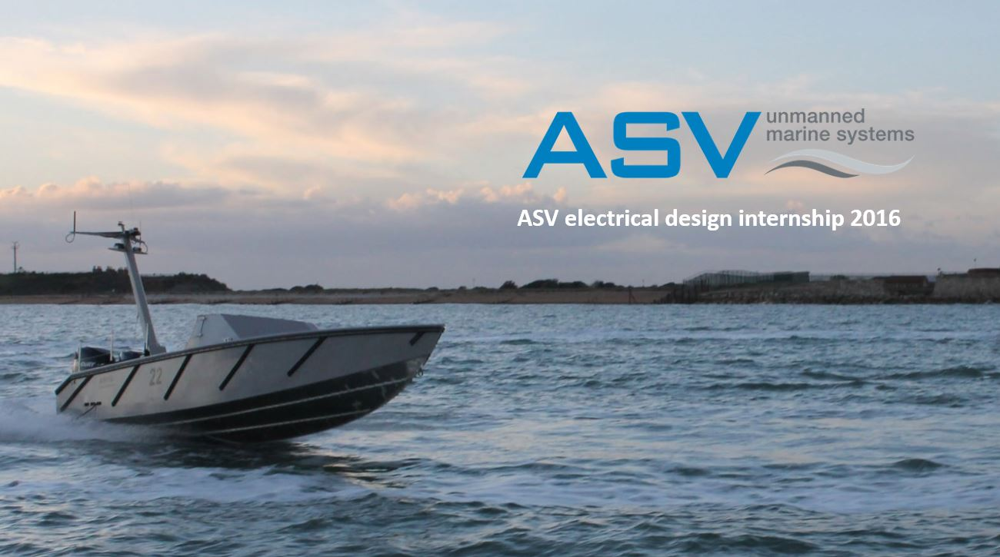
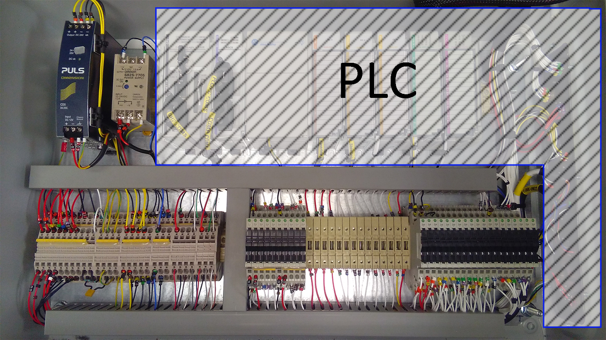
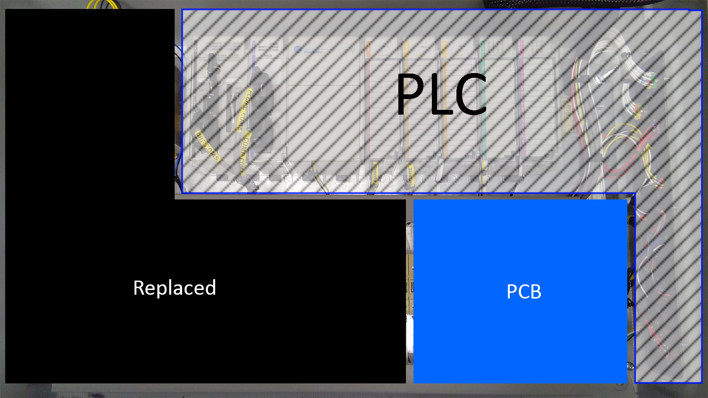
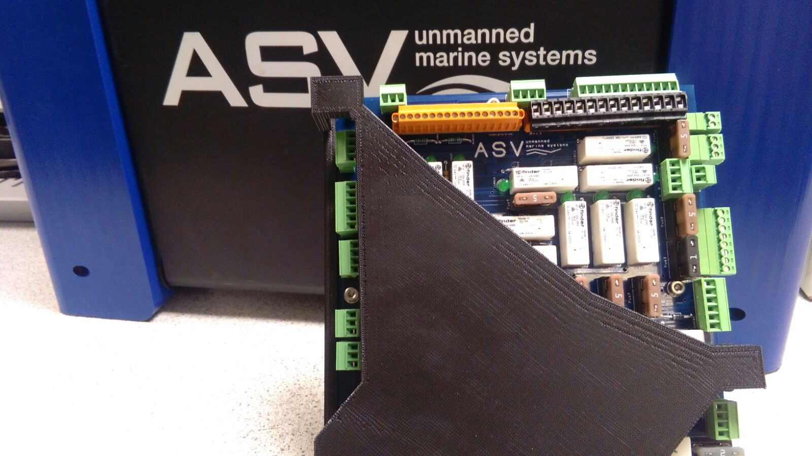
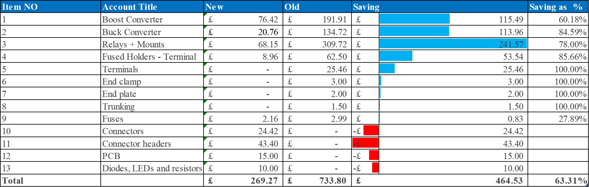

The system is enclosed in a bulletproof rectangular enclosure. Previous configuration:

The non shadowed section was replaced with the following board, which takes one quarter the space:

The Board:

This achived a 63% reduction in component costs:

This also achived:
- Increased quality and reliability
- Reduction in manufacturing time
- Reduced manufacturing complexity
More detail can be found on ASV's website: